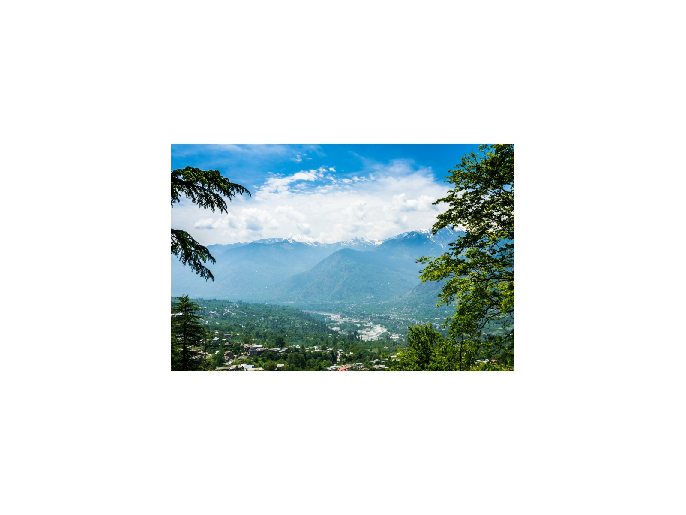

Roerich Art Gallery and Estate, Naggar
The Himalayan home of the Russian painter Nicholas Roerich
Overview
The Roerich Estate in Naggar was the Himalayan home of the Russian painter, philosopher and explorer Nicholas Roerich, who settled in the Kullu valley in 1928 and lived here until his death in 1947. His sons, the painter Svetoslav Roerich and the scholar George Roerich, are closely linked with the estate.
A gallery shows paintings of the Himalaya by Nicholas and Svetoslav Roerich, along with personal items, and the grounds look over the valley and the snow peaks. It is of special interest to Russian-speaking visitors.
What to look for
- The Himalayan paintings of Nicholas and Svetoslav Roerich
- The house and the gardens with mountain views
- The memorial to Nicholas Roerich
Visiting tips
- Allow about an hour, plus time to enjoy the views.
- It sits close to Naggar Castle and the Tripura Sundari temple.
- Check opening days before you visit.
Why visit with a private guide
A private guide shows you where to stand, when to arrive and what most visitors miss at Roerich Art Gallery and Estate, Naggar, and fits the visit around the rest of your day.
More photographs


Nearby
Paragliding McLeod Ganj Monasteries Hadimba Temple Solang Valley Bhootnath Temple Castle Christ Church Ridge Toy Train Springs
Journeys that include Roerich Art Gallery and Estate, Naggar
 8 Days
8 Days8-Day Himalayan Heritage Rail: Toy Train, Kullu Valley & McLeod Ganj
The UNESCO Toy Train, colonial Shimla, the Kullu Valley and the Tibetan hills of McLeod Ganj in eight days.
View journey → 9 Days
9 Days9-Day Himalayan Panorama & Golden Temple Traverse
Himalayan hill towns and monasteries, ending at the Golden Temple in Amritsar, over nine days.
View journey →Tell me your dates and interests
I will personally prepare an itinerary and quotation within 24 hours. No groups, no fixed scripts.